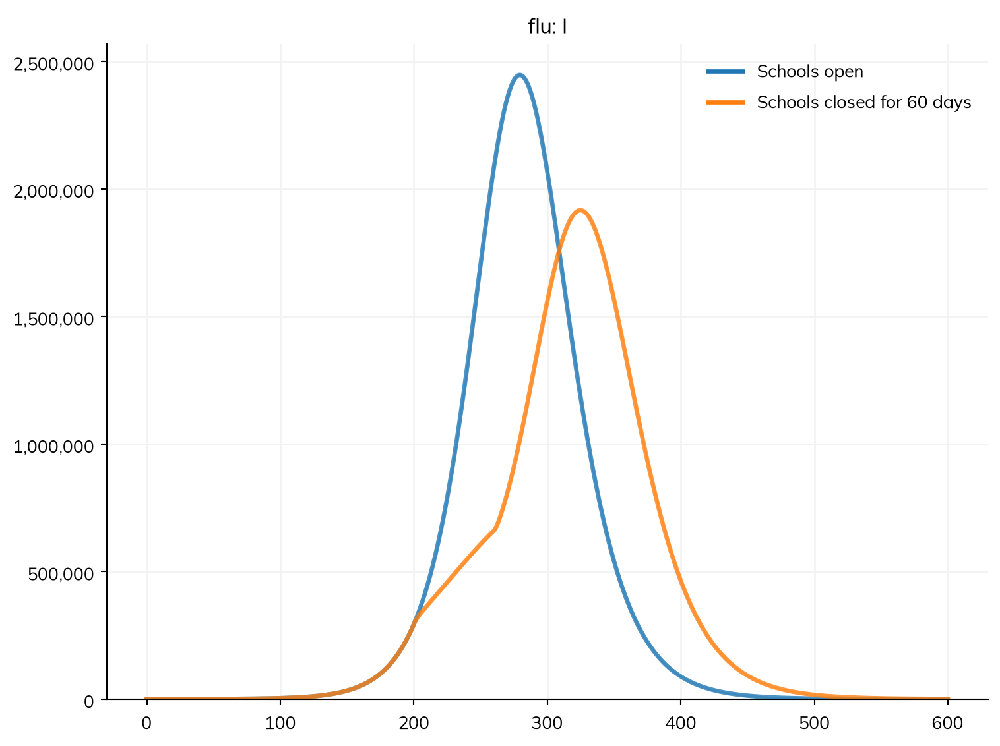
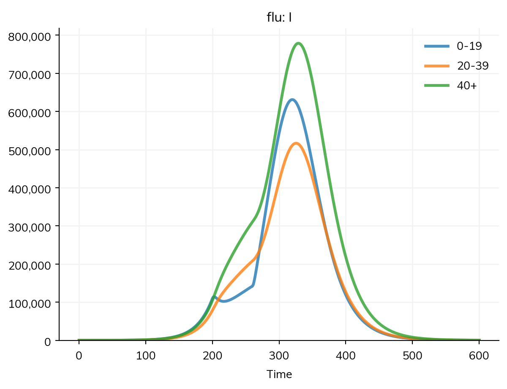

Closing schools is one of the first measures considered against a new respiratory infection. It removes the contacts children make at school, but not those at home or elsewhere, so whether it helps depends on how much of the spread happens at school, and on when the schools close and reopen. This page models a closure as the loss of one setting’s contacts, adapting the school closure example of the Epidemics R package: an SEIR model of an influenza-like infection in the population of the United Kingdom, in three age groups, with the contact matrices of Prem et al. (2021) for each setting.
The model
Parameter
Value
Meaning
β
0.016 per contact
Chance of infection per contact with an infectious person
Latent period
3 days
Mean time in E (exponential)
Infectious period
7 days
Mean time in I (exponential)
Age groups
0–19, 20–39, 40+
With the shares of the United Kingdom’s population
Contacts
Prem et al. (2021)
One matrix each for home, school, work, and the rest of the community
Infectious at the start
One in a million
Closure
Days 200 to 260
School contacts removed; the others go on
import starsim as ssS, E, I, R = ss.states('S E I R')flu = ss.Disease( infection = S >> E @0.016*I, onset = E >> I @ ss.days(3), recovery = I >> R @ ss.days(7), init =dict(I=1e-6), name ='flu',)flu.stratify(age=[0, 20, 40])home, school, work, community = [ss.contacts('United Kingdom', layer=layer) for layer in ['home', 'school', 'work', 'community']]
Starsim kernels: Rust, OUT OF DATE (built before its source last changed, so results may be wrong): run "./build" in starsim/solvers/rust/
R0 is about 1.5. The closure is a modifier of the school contacts: from day 200 to day 260 they are multiplied by zero, and when it ends, they are back as they were, since a modifier never changes the contacts themselves.
MultiSim: 2 runs of 2 scenarios (Schools open, Schools closed for 60 days)
Done in 0.76 s

The closure doesn’t prevent the epidemic. It delays the peak by about six weeks and lowers it by about a fifth, which could matter for hospitals, but most of those it spares are infected after schools reopen, since the epidemic resumes among people who are still susceptible: the number infected in all is only about 3% lower.
msim.summarize().loc['flu_infection']
value
scenario
Schools open
3.398707e+07
Schools closed for 60 days
3.288660e+07
By age, the number infectious falls in every group while schools are closed, and most among children, who make most of the contacts at school:
sims['Schools closed for 60 days'].results.flu.I.by('age').plot()

The Epidemics package says a closure another way: as a share by which the contacts of each age group fall (e.g. by half for those under 20). That works in Starsim too, as a modifier of each group’s susceptibility and transmissibility, e.g. ss.modify(flu.rel_sus, multiply=0.5, where=flu.age < 20, start=..., stop=...). Removing the school contacts says more directly what a closure does, when the contacts by setting are known.